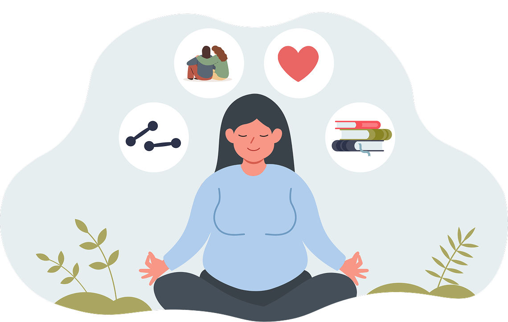

A adolescência é uma fase de mudanças e desafios que podem afetar o bem-estar emocional. Por isso, cuidar da saúde mental é essencial para desenvolver autoestima, lidar com duficuldades e manter relações saudáveis. O apoio da família, dos amigos e da escola é fundamental nesse processo.

COMO CUIDAR DA SAÚDE MENTAL
Alguns hábitos são fundamentais para manter a saúde mental em equilíbrio, como dormir bem, ter uma alimentação saudável, praticar atividades físicas e conversar com pessoas de confiança. Essas atitudes contribuem para o bem-estar emocional e ajudam a lidar melhor com os desafios do dia a dia, reduzindo o estresse e aumentando a sensação de segurança e acolhimento. Além disso, é importante desenvolver o autoconhecimento, reconhecendo sentimentos, limites e necessidades. Reservar momentos de lazer, descanso e atividades que proporcionem prazer também é essencial para manter o equilíbrio emocional. O uso consciente das redes sociais é outro ponto importante, evitando comparações excessivas e conteúdos que possam afetar negativamente a autoestima. Quando as dificuldades persistem, procurar ajuda profissional é essencial para receber o apoio adequado. O acompanhamento com especialistas permite desenvolver estratégias para enfrentar emoções e situações difíceis de forma mais saudável, além de oferecer um espaço seguro para expressão e escuta. Outro aspecto importante é manter uma rotina organizada, equilibrando estudos, responsabilidades e momentos de descanso. Ter objetivos realistas e evitar cobranças excessivas também contribui para diminuir a ansiedade e a frustração. Além disso, o suporte profissional também é importante na prevenção de problemas mais graves, promovendo melhor qualidade de vida, fortalecendo o bem-estar emocional e contribuindo para um desenvolvimento mais saudável. Cuidar da saúde mental é um processo contínuo e deve ser valorizado tanto quanto a saúde física, pois influencia diretamente na forma como o indivíduo pensa, sente e se relaciona com o mundo ao seu redor.
HÁBITOS QUE AJUDAM NO BEM-ESTAR EMOCIONAL
Cuidar do bem-estar emocional é tão importante quanto cuidar da saúde física. As emoções fazem parte da vida e influenciam a forma como pensamos, agimos e nos relacionamos com as pessoas. Embora seja normal enfrentar momentos de tristeza, preocupação ou estresse, alguns hábitos saudáveis podem ajudar a manter o equilíbrio emocional e proporcionar uma melhor qualidade de vida. Um dos principais hábitos é manter uma rotina equilibrada. Dormir bem, alimentar-se de forma saudável e praticar atividades físicas regularmente contribuem para o bom funcionamento do organismo e também da mente. Além disso, reservar um tempo para descansar e fazer atividades que tragam prazer, como ler um livro, ouvir música ou passear ao ar livre, pode ajudar a aliviar as tensões do dia a dia. Outro aspecto importante é cultivar relacionamentos saudáveis. Conversar com amigos, familiares ou pessoas de confiança fortalece os laços afetivos e faz com que nos sintamos apoiados nos momentos difíceis. Compartilhar sentimentos e experiências pode diminuir a sensação de solidão e ajudar a encontrar novas formas de lidar com os desafios. Também é essencial aprender a reconhecer e expressar as próprias emoções. Muitas vezes, esconder o que sentimos pode aumentar o sofrimento. Aceitar que todas as emoções fazem parte da vida e buscar maneiras saudáveis de expressá-las é um passo importante para o autoconhecimento e o equilíbrio emocional. Por fim, é importante lembrar que cuidar da saúde mental é um processo contínuo. Pequenas mudanças na rotina podem trazer grandes benefícios ao longo do tempo. E, quando as dificuldades emocionais se tornam intensas ou persistentes, procurar a ajuda de um profissional é uma atitude de cuidado e responsabilidade. Desenvolver hábitos saudáveis não elimina todos os problemas da vida, mas fortalece a capacidade de enfrentá-los com mais tranquilidade, confiança e equilíbrio.

O QUE REALMENTE SIGNIFICA PRATICAR O AUTOCUIDADO?
Praticar o autocuidado significa dedicar tempo e atenção às próprias necessidades, buscando preservar a saúde física, mental e emocional. Muitas pessoas acreditam que autocuidado está relacionado apenas a momentos de lazer ou cuidados com a aparência, mas esse conceito é muito mais amplo. Ele envolve fazer escolhas que promovam bem-estar e contribuam para uma vida mais saudável e equilibrada. O autocuidado pode estar presente em atitudes simples do dia a dia, como manter uma alimentação equilibrada, dormir o suficiente, praticar exercícios físicos, reservar um tempo para descansar e respeitar os próprios limites. Também significa aprender a dizer "não" quando necessário, evitar situações que causem sofrimento constante e buscar apoio quando enfrentar dificuldades emocionais. Além disso, praticar o autocuidado é reconhecer que cuidar de si mesmo não é um ato de egoísmo, mas de responsabilidade. Quando estamos bem, temos mais disposição para enfrentar os desafios da rotina, cuidar das pessoas que amamos e tomar decisões de forma mais consciente. Ao longo deste blog, vimos que pequenos hábitos podem fazer uma grande diferença na saúde mental. Cuidar das emoções, cultivar bons relacionamentos e valorizar momentos de descanso são atitudes que fortalecem o bem-estar e ajudam a construir uma vida mais equilibrada. O autocuidado não precisa ser perfeito nem acontecer apenas em ocasiões especiais; ele começa nas pequenas escolhas feitas todos os dias. Afinal, investir em si mesmo é um dos passos mais importantes para viver com mais saúde, qualidade de vida e felicidade.